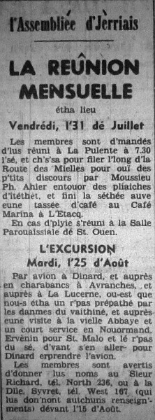

Les 98 membres, lé pus grand nombre jusqu'â ch't heu qu'ont 'té pour l'excursion, eutent un jour chouaisi, mardi, l'25 d'août, bieau qué quand vînt l'arlévée, i' faithait eune arsion, et l'solei' brûlait l'travers du vèrre des charabancs.
I' y avait des membres sus trais avions à sorti d'Jèrri, dé vièrs 8 heuthes lé matîn, et un coup arrivés à Dinard, tous montîtent sus deux grands charabancs en route pour eune touannée dé 150 milles lé travèrs dé la campagne.
La preunmié ville à passer 'tait Pleurtuit, qu'avait 'té presque rathée à terre duthant la dreine dgèrre, mais qu'est erbattie, casiment touos les batisses étant en pierre. Ichin, à l'Eglyise dé Ste. Catherine, les Allemands trouvaient l'clochi trop haut, et fîtent les gens lé r'pliaichi à côté d'la porte.
Auprès chenn-chin par sus l'Pont St. Hubert, en d'sus d'la Rance, et au lien nou viyait l'Mont St. Michel. Pus lien en d'sus d'la vallée d'Pleine Fougères, ouest qu'i' disent qué nou peut vaie 31 cliochis d'églyises. Un coup à Pontorson nou' vit la belle hôpita, auve ses bieaux gardîns, et un miot pus près d'Avranches, dans la campagne, y'a hardi d'herbage et d'avou, mais comme en Jèrri tout est bein sec. Lé preunmié arrêt 'tait à Avranches, où-est qu'les gens pouvaient aver eune tasse dé café ou vaie le bieaux jardins les Plantes.
Comme tréjous, lé temps est court, et fallit s'mettre tout d'suite en route par Sartilly, et auprès, la belle vallée d'La Lucerne, et pus tard, la vieille Abbaye même.
Ichîn l'Abbé Marcel Lelégard fit la beinv'nue ès membres, en vraie langue Nouormande, et nos donnit l's arrang'ments pour la visite et "Auprès cha, s'n allait vos r'lâtchi" à 3 heuthes un quart.
Parmi les gens notablyes v'nus là tout à l'exprès pour rencontrer et honoré L'Assemblée y'avait eune racachie d'savants - Moussieu Fernand Lechanteur, du grand Lycée Malherbe à Caën, et pis l'Sieur André Dupont, d'la Sociêté Archéologique et poète Nouormand, et l'sieur Yves Nédellec, archiviste en chef, touos les deux d'St.-Lô, et l'Père Louis Bouyer, dé l'Oratoire, tchi d'meuthe là auve l'Abbé Lelégard quand i' n'est pon à faithe des conferences en Améthique ou ailleurs.
En arrivant, un r'pas tout-à-fait Nouormand, qu'avait 'té prépathé et qui fut sèrvi par les danmes du vaîthinné, à touos les membres. I' y avait des pliats pour touos les goûts, et tout plein d'bouan pain et d'beurre, et du doux cidre, fait à l'abbaye même.
Un coup le r'pas fini, les siens qui voulaient pudrent prendre part dans un court service en langue Nouormande, auve Moussieu Danguy à condithe lé chant. Lé cantique 152 dé d'dans la Litourgie Francaise Anglyicane fut chanté, et les Pseaômes 110, 111 et 112, qu'avaient 'té traduits tout spécialement par lé Sieur Dupont et l'Abbé Lohier. La Leçon, prînse du dgèxième chapitre dé l'Evangile St. Luc, fut liue par l'Abbé Lelégard.
Dans un p'tit discours l'Abbé dit qué y avait bein des siéclyes qué les muthalles 'taient à haut mais qu'i n'y avait janmais ieu un service Nouormand, et il espéthait qu'i y en éthait d'autres là, et même ailleurs dans la Nouormandie.
L'information fut donnée là par un moussieu qu'i' 'tait a aidgi, qué les fermes qu'apparténaient à l'abbaye au temps passé avaient 'té vendus, à des partitchuliers, mais qué lé louage sé payé en partie en lait, beurre, poules, etc., comme dans les temps passés.
L'Député Quérée, Président, ermercyit l'Abbé Lelégard pour lé magnifique temps qu'nou-s-avait ieu à La Lucerne, et auprès l'Trésoryi, d'la part des membres présents, rçompensit l'abbé pour nos aver fourni un si libéral erpas.
En r'vénant par eune difféthente route jusqu'à Sartilly, i' semblyait qué nou' viyait mus lé magnifique paysage alentou d'La Lucerne, si trantchille et paîsiblye.
Maheutheus'ment, fallait ervénin sus nos pas jusqu'à Pontorson, et pis auprès par la côte, lé travers dé chain qui s'app'lait l'temps passé La Forêt de Cissy, mais qu'avait 'té compliét'ment couverte par la mé, la cause qué i' y a tant d'sablion mêlé avec la terre.
Pus lien n'ou avait eune belle veue du Mont St. Michel et d'la ville dé Cancale. I' y avait hardi d'brébis l'long d'la route; ches brébis aiment hardi l'herbe qui crait dans du salin, mais pas dans du terrain ordinaithe. À m'suthe qué mous appréchait d'St. Malo la tchultuthe changeait et les clios 'taient bein labouothés. I' y avait des grands betchéts d'brécolis et d'ledgumes, et même iun d'tomates.
A St. Malo nou-s-eut du thée à l'Hôtel de l'Univers, et tchiques temps d'êpaigne auprès devant prendre la vedette pour Dinard, et en arrivant ichîn les charabancs pour lé "Champ d'Aviation", en temps pour ervénin en Jèrri.
Tous r'arrivitent "sains et saufs", un miot lâssées sans doute par la grand' chaleu, mais quand-mème bein contents d'lus jour, car ch'avait 'té eune occasion unique pour L'Assembliée d'être spécial'ment învitée à un r'pas et eune visite à la veille Abbaye d'La Lucerne.
1964
Viyiz étout: